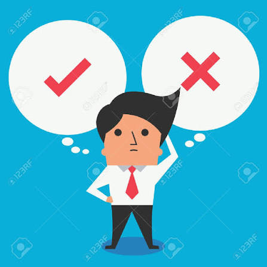
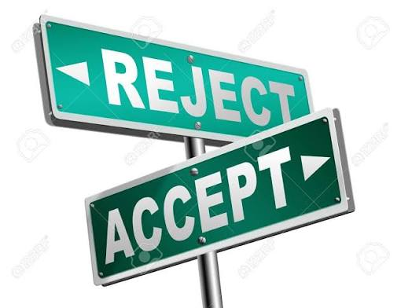
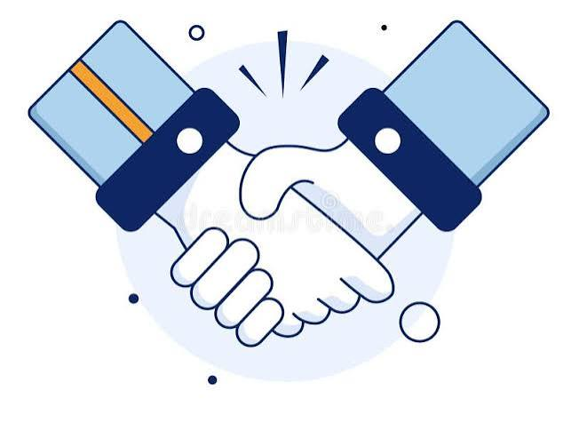
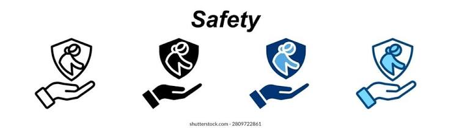

La importancia de tomar decisiones
Cada día, tomamos decisiones que pueden influir tanto en nuestra vida como en la de otras personas. Por esta razón es importante pensar antes de actuar, informarnos y reconocer nuestros derechos para que tus decisiones sean las mejores posibles.

Nuestros derechos
Todos tenemos derecho a ser respetados y escuchados al decidir si aceptar o no una propuesta.

El consentimiento
Decidir libremente también significa respetar a los demás.

El consentimiento significa aceptar algo de manera libre, voluntaria e informada. Nadie debe obligarnos a hacer algo que no queremos.
- Debe ser libre, sin amenazas ni presiones.
- Debe ser claro y voluntario.
- Se puede cambiar de opinión en cualquier momento.
- El silencio no significa que alguien esté de acuerdo.
La presión de grupo
A veces nuestros amigos o compañeros pueden influir en nuestras decisiones. Esto se conoce como presión de grupo. Es importante recordar que no tenemos que hacer algo solamente para agradar a los demás.
¿Cómo podemos enfrentarla?
- Aprender a decir que no.
- Confiar en nuestras propias decisiones.
- Buscar amigos que respeten nuestras opiniones.
- Pedir ayuda a un adulto de confianza.
La prevención y el cuidado

Prevenir significa informarnos y actuar antes de que ocurra una situación que pueda perjudicarnos. Cuidarnos también implica cuidar a los demás.
- Buscar información en fuentes confiables.
- Consultar a profesionales cuando tengamos dudas.
- Reconocer situaciones de riesgo.
- No dejarnos llevar por decisiones impulsivas.
¿Qué debemos hacer?
- Identificar el problema o la situación.
- Buscar información confiable.
- Analizar las posibles consecuencias.
- Elegir libremente y sin presiones.
- Respetar nuestra decisión y la de los demás.
Consecuencias de no aprovechar el derecho
- Es posible que una mujer quede embarazada en contra de sus deseos por no negarse, debido a vergüenza o miedo al rechazo, o incluso si la otra parte no respeta su decisión y realiza una violación. Un embarazo condiciona la vida de la mujer permanentemente en caso de no poder abortar.
- Alguna de las partes puede contraer una infección de transmisión sexual.
- Estudiar una carrera o seguir un camino que se quería realizar por compromiso.
- Resumidamente, arrepentimiento.
Nuestra reflexión
Decidir con responsabilidad es priorizar nuestros derechos y ser conscientes de las consecuencias de nuestras acciones para no arrepentirse en un futuro lejano o cercano.